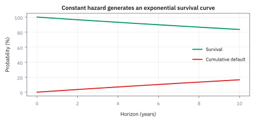
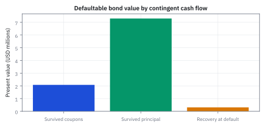
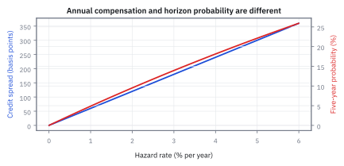

20.6 Defaultable Bonds, Hazard Rates, and Survival
พันธบัตรเอกชนจ่ายคูปองและเงินต้นเฉพาะเมื่อผู้ออกยังไม่เจ๊ง และจ่ายเงินคืนบางส่วนเมื่อเจ๊ง ราคาจึงเป็นสามบัญชีที่ถ่วงด้วยโอกาสรอดและคิดลดตามเวลาที่เงินมาจริง
หุ้นกู้เอกชนอายุ 5 ปี หน้าตั๋ว \$10,000,000 คูปอง 5% ต่อปี อัตราไร้ความเสี่ยง 4.5% ต่อปี (ทบต่อเนื่อง) อัตราเจ๊ง (hazard rate) คงที่ 1.8% ต่อปี ถ้าเจ๊งได้คืน 40% ของหน้าตั๋วทันที (ตัวเลขสมมติ) พันธบัตรเดียวกันที่ไม่มีทางเจ๊งราคา \$10,173,877.69 เพื่อนคิดว่าห้าปีมีโอกาสเจ๊ง $5(1.8\%)=9\%$ เสียเงิน 60% ของหน้าตั๋ว จึงหักไป $0.09(0.6)(10^7)=\$540{,}000$ ได้ \$9,633,877.69 ถูกไหม?
ลองตอบก่อนเปิดเฉลย
ไม่ถูก ราคาที่ถูกคือ \$9,684,390.68 เพื่อนต่ำไป \$50,512.99 เพราะพลาดสองเรื่อง โอกาสเจ๊งห้าปีคือ $1-e^{-0.09}=8.6069\%$ ไม่ใช่ 9% เพราะคนที่เจ๊งไปแล้วเจ๊งซ้ำไม่ได้ และความเสียหายเกิดในอนาคต จึงต้องคิดลด ต้องแยกคิดสามบัญชี: คูปองที่ได้เมื่อรอด \$2,077,689.22 เงินต้นที่ได้เมื่อรอดถึงปีที่ 5 \$7,297,888.74 และเงินคืนเมื่อเจ๊ง \$308,812.72
สิ่งที่เราจะสร้าง
ทุกหน้าก่อนหน้านี้สมมติว่าเงินที่สัญญาไว้จ่ายครบแน่นอน หน้านี้เพิ่มความเป็นไปได้ที่ผู้ออกหยุดจ่าย แทนที่จะจำลองว่าทำไมบริษัทเจ๊ง เราบอกแค่ว่ามันเจ๊งด้วยอัตราเท่าไรต่อปี (hazard rate) แล้วให้ราคาตลาดบอกตัวเลขนั้น เรียกแนวทางนี้ว่า reduced-form
ลำดับคือ นับผู้รอดแล้วได้สมการของโอกาสรอด กรณีอัตราคงที่ ราคาพันธบัตรเป็นสามบัญชี ตัวอย่างของโจทย์เปิดหน้า เทียบกับพันธบัตรไร้ความเสี่ยงและ yield สูตรลัดของ credit spread ความไวต่อ hazard (credit01) แล้วใส่การเจ๊งลงในต้นไม้ของ 20.3 และปิดด้วยการแกะ hazard จากราคาพันธบัตรห้าตัวในไฟล์ของคอร์ส
ศัพท์ที่ใช้ในหัวข้อนี้
- Hazard rate
- อัตราเจ๊งต่อปีของผู้ที่ยังรอดอยู่ ณ เวลานั้น คูณกับช่วงเวลาสั้น ๆ ได้สัดส่วนของผู้รอดที่จะเจ๊งในช่วงนั้น ไม่ใช่โอกาสเจ๊งสะสมตั้งแต่วันนี้
- Survival probability
- โอกาสที่ผู้ออกยังไม่เจ๊งถึงเวลาหนึ่ง ใช้ถ่วงคูปองและเงินต้นซึ่งจ่ายเฉพาะเมื่อรอด หนึ่งลบค่านี้คือโอกาสเจ๊งสะสม
- Recovery rate และ loss given default
- recovery คือสัดส่วนของหน้าตั๋วที่เจ้าหนี้ได้คืนเมื่อเจ๊ง (recovery of par) loss given default คือหนึ่งลบค่านี้ ต้องบอกเสมอว่าเป็นสัดส่วนของอะไรและจ่ายเมื่อไร
- Credit spread
- yield ส่วนที่เกินอัตราไร้ความเสี่ยง ชดเชยความเสียหายที่คาด ค่าความเสี่ยง สภาพคล่อง และปัจจัยทางเทคนิค โดยประมาณเท่ากับ hazard คูณ loss given default
- Risk-neutral และ physical hazard
- hazard ที่แกะจากราคาตลาดใช้ตั้งราคา (ใต้ $\mathbb Q$) และสูงกว่าอัตราเจ๊งที่เกิดจริงในข้อมูลย้อนหลังเพราะรวมค่าความเสี่ยงไว้ ใช้แทนกันตรง ๆ ไม่ได้
- Credit01
- เงินที่ตำแหน่งได้เสียเมื่อ hazard (หรือ credit spread) ขยับ 1 bp แบบ DV01 ของ 18.2 ใช้กำหนดขนาด hedge ด้วย CDS ใน 20.7
สัญลักษณ์และหน่วย
| สัญลักษณ์ | ความหมาย | หน่วย |
|---|---|---|
| $\lambda,\ h$ | hazard rate แบบต่อเนื่อง และโอกาสเจ๊งต่องวดของผู้ที่รอดถึงต้นงวด | ต่อปี, ต่องวด |
| $Q(t),\ F(t)$ | โอกาสรอดถึง $t$ และโอกาสเจ๊งสะสม $1-Q(t)$ | ไม่มีหน่วย |
| $q(t)$ | density ของเวลาเจ๊ง $=-dQ/dt$ | ต่อปี |
| $R$ | recovery เป็นสัดส่วนของหน้าตั๋ว | ไม่มีหน่วย |
| $N,\ c,\ T,\ r$ | หน้าตั๋ว คูปองต่อปี อายุ และอัตราไร้ความเสี่ยงทบต่อเนื่อง | \$, ต่อปี, ปี, ต่อปี |
| $P_{\rm def},\ P_{\rm rf}$ | ราคาพันธบัตรที่เจ๊งได้ และพันธบัตรเดียวกันที่ไม่เจ๊ง | \$ |
| $\bar Z_{i,j}$ | ราคาที่จุด $(i,j)$ ของต้นไม้ของ zero ที่เจ๊งได้ เมื่อยังไม่เจ๊ง | \$ ต่อ \$1 |
ขั้นที่ 1 — นับผู้รอด: จาก hazard ถึงโอกาสรอด
เริ่มจากตัวเลขที่จับต้องได้ ลูกหนี้ 10,000 รายที่ยังไม่เจ๊ง hazard 1.8% ต่อปี หนึ่งเดือนคาดว่าเจ๊ง $10{,}000(0.018)/12=15$ ราย เดือนถัดไปนับจากคนที่เหลือ 9,985 ราย ไม่ใช่ 10,000 เขียนการนับนี้เป็นสัดส่วน $Q(t)$ ของผู้ที่ยังรอด แล้วให้ช่วงเวลาสั้นลง
แถวแรกคือนิยามของ hazard: ในช่วงสั้น $\Delta t$ ผู้รอดหายไปสัดส่วน $\lambda\Delta t$ ของผู้ที่ยังรอด ลบ $Q(t)$ แล้วหาร $\Delta t$ ได้อนุพันธ์ หารด้วย $Q$ ให้เป็นอนุพันธ์ของ log แล้วอินทิเกรตจาก 0 โดย $Q(0)=1$ รูปเดียวกับการทบต้นต่อเนื่องของ 18.1 ต่างแค่สิ่งที่หดคือผู้รอด ไม่ใช่เงินที่โต
ทั้งหมดนี้อยู่ใต้ $\mathbb Q$ ของการตั้งราคา hazard ที่แกะจากราคาตลาดรวมค่าชดเชยความเสี่ยงไว้แล้ว ถ้าจะพยากรณ์การเจ๊งจริงต้องประมาณแยกจากข้อมูลย้อนหลัง
ขั้นที่ 2 — hazard คงที่: โอกาสรอด โอกาสเจ๊ง และ density
ถ้า $\lambda$ คงที่ อินทิเกรตของขั้นที่ 1 เหลือ $\lambda T$ ได้สามปริมาณที่ต้องใช้ต่อ เขียนคู่กันเพราะพลาดกันบ่อยเรื่องเครื่องหมาย แถวสุดท้ายตรวจย้อน: อินทิเกรต density ต้องได้โอกาสเจ๊งสะสมกลับมา
ห้าปีมีโอกาสเจ๊ง 8.6069% ไม่ใช่ $5(1.8\%)=9\%$ เพราะผู้ที่เจ๊งแล้วเจ๊งซ้ำไม่ได้ ฐานผู้รอดจึงหดลงทุกปี นี่คือ exponential distribution ของ 1.8 ซึ่งมีสมบัติไม่จำอดีต: รอดมากี่ปีก็มีอัตราเจ๊งเท่าเดิม เป็นทั้งความง่ายและข้อจำกัดของการเลือก hazard คงที่
ในไฟล์คำนวณเวลาเป็นงวด ถ้าโอกาสเจ๊งต่องวดคือ $h=2\%$ โอกาสรอดคือ 0.98, 0.9604 และ 0.941192 ในงวดที่ 1 ถึง 3 และโอกาสเจ๊งในแต่ละงวด $Q(t-1)h$ คือ 0.02, 0.0196 และ 0.019208 ลดลงทุกงวดทั้งที่ $h$ คงที่ ด้วยเหตุผลเดียวกัน
Figure 20.6a — โอกาสรอดลดลง โอกาสเจ๊งสะสมเพิ่มขึ้น

แกนนอนคือ 0 ถึง 10 ปี (160 จุด) แกนตั้งเป็นเปอร์เซ็นต์ เส้นเขียวคือ $100e^{-0.018t}$ เส้นแดงคือ $100(1-e^{-0.018t})$ สองเส้นรวมกันได้ 100 ทุกจุด ที่ 5 ปีคือ 91.39 และ 8.61 ที่ 10 ปีคือ 83.53 และ 16.47 เส้นแดงเริ่มด้วยความชัน 1.8 จุดต่อปีแล้วค่อย ๆ ชันน้อยลง เพราะผู้รอดที่จะเจ๊งได้เหลือน้อยลง
ขั้นที่ 3 — ราคาเป็นสามบัญชี แยกตามเหตุการณ์ที่ทำให้ได้เงิน
คูปองปีที่ $i$ ได้ก็ต่อเมื่อรอดถึงปีที่ $i$ จึงคูณ $Q(i)$ แล้วคิดลด เงินต้นได้เมื่อรอดถึงปีที่ $T$ เงินคืน $RN$ ได้เมื่อเจ๊งที่เวลา $t$ ใด ๆ จึงถ่วงด้วย density $q(t)$ คิดลดจากเวลานั้น แล้วรวมทุก $t$ สามบัญชีบวกกันได้เพราะเงินก้อนหนึ่งมาจากเหตุการณ์เดียว เมื่อ $r$ และ $\lambda$ คงที่ ตัวคิดลดคูณโอกาสรอดรวมเป็นเลขชี้กำลังเดียว
$e^{-rt}e^{-\lambda t}=e^{-(r+\lambda)t}$ คือหัวใจของหน้านี้: เงินที่จ่ายเมื่อรอดถูกคิดลดด้วยอัตรา $r+\lambda$ โอกาสเจ๊งจึงทำตัวเหมือนดอกเบี้ยส่วนเพิ่ม นี่คือเหตุที่ตลาดพูดถึงความเสี่ยงเครดิตเป็นส่วนต่างของอัตรา
ในบัญชีที่สาม $\lambda/(r+\lambda)$ คูณ $(1-e^{-(r+\lambda)T})$ คือโอกาสเจ๊งก่อนครบกำหนดที่คิดลดแล้ว ถ้าเอาเงินคืนไปรวมกับเงินต้นที่ปีที่ 5 จะนับเวลาผิด ราคาและความไวจะเพี้ยน
ขั้นที่ 4 — คำตอบของโจทย์เปิดหน้า
โจทย์ให้อะไรมาบ้าง: $N=\$10{,}000{,}000$ $c=5\%$ ($Nc=\$500{,}000$) $r=4.5\%$ $\lambda=1.8\%$ $R=40\%$ $T=5$ ปี อัตราคิดลดรวม $r+\lambda=6.3\%$ ตัวคิดลดห้าปีคือ 0.938943, 0.881615, 0.827787, 0.777245 และ 0.729789
คำตอบ: ราคา \$9,684,390.68 หรือ 96.8439 ต่อหน้าตั๋ว 100 คูปองห้างวดคิดลดแล้วคือ \$469,471.74, \$440,807.42, \$413,893.25, \$388,622.37 และ \$364,894.44 เงินคืนเป็นก้อนเล็กที่สุดเพราะโอกาสเจ๊งในห้าปีมีแค่ 8.6% และได้คืนแค่ 40%
ตรวจเองใน 10 วินาที: $4.155378$ คือผลบวกของตัวคิดลดห้าตัว และ $0.270211=1-0.729789$ ส่วน $0.018/0.063=0.285714$
Figure 20.6b — ราคาแยกเป็นสามบัญชี

แท่งสามแท่งเป็นล้านดอลลาร์: คูปองที่ได้เมื่อรอด 2.078 เงินต้นที่ได้เมื่อรอด 7.298 และเงินคืนเมื่อเจ๊ง 0.309 รวม 9.684 เงินคืนไม่ได้ชดเชยความเสียหายทั้งหมด มันเพิ่มมูลค่าเฉพาะในโลกที่เจ๊ง และมูลค่าของมันขึ้นกับว่าเจ๊งเมื่อไร
ขั้นที่ 5 — เทียบกับพันธบัตรที่ไม่เจ๊ง และ yield
พันธบัตรเดียวกันที่ไม่มีทางเจ๊งคิดลดด้วย $r$ อย่างเดียว ส่วนต่างของราคาคือสิ่งที่ตลาดหักไว้เพราะความเสี่ยงเครดิต แล้วแปลงราคาเป็น yield แบบที่ตลาด quote (ทบปีละครั้ง) ด้วย bisection แบบ 18.2
ส่วนต่าง \$489,487.01 ไม่เท่ากับความเสียหายที่คาดแบบง่าย $0.086069(0.6)(10^7)=\$516{,}412.89$ วิธีหักตรง ๆ แบบนี้ได้ \$9,657,464.80 ยังต่ำไป \$26,925.87 เพราะความเสียหายเกิดในอนาคตจึงต้องคิดลด และเมื่อเจ๊งก็ไม่ต้องรอคูปองที่เหลือแต่ได้เงินคืนเร็วขึ้น
yield 5.744% เป็นอัตราเดียวที่ยุบเงินทุกก้อนให้เท่าราคา ไม่ใช่ hazard และไม่ได้แยก recovery หรือเวลา ต่างจาก yield ไร้ความเสี่ยง 114.1 bp เมื่อ quote ทบปีละครั้ง
ขั้นที่ 6 — สูตรลัด: credit spread ≈ hazard × loss given default
คนในตลาดแปลงไปมาระหว่าง spread กับ hazard ด้วยสูตรบรรทัดเดียว มาจากพันธบัตรหนึ่งงวด: รอดได้ \$1 เจ๊งได้ $R$ ใช้ Taylor อันดับหนึ่งกับ $e^{-\lambda}$ แล้วใช้ $1-x\approx e^{-x}$ กลับ
ตรวจกับพันธบัตรห้าปี: yield ทบต่อเนื่องที่ให้ราคา \$9,684,390.68 คือ 5.5851% ส่วนต่างจาก 4.5% คือ 108.51 bp ใกล้ 108 bp มาก ถ้าคิดลดทุกก้อนด้วย $4.5\%+1.08\%$ ได้ \$9,686,642.11 สูงไปแค่ \$2,251.43 สูตรลัดดีเมื่อ hazard เล็ก แต่ไม่ใช่เครื่องตั้งราคา: มันไม่แยกเวลาของเงินคืน สภาพคล่อง หรือคูปองที่ต่างกัน
Figure 20.6c — hazard และ recovery กำหนดราคาร่วมกัน

แกนนอนคือ hazard 0% ถึง 6% ต่อปี (121 จุด) แกนตั้งคือราคาต่อหน้าตั๋ว 100 ของพันธบัตรในขั้นที่ 4 ทุกเส้นเริ่มที่ 101.74 (ไม่เจ๊ง) ที่ hazard 6% ราคาคือ 82.27, 86.94 และ 91.61 สำหรับ recovery 20%, 40% และ 60% recovery สูงทำให้ราคาตกช้าลง เพราะความเสียหายต่อครั้งเล็กลง เส้นโค้งเล็กน้อยเพราะโอกาสรอดและเวลาของเงินคืนเป็น exponential
Figure 20.6d — spread ต่อปีกับโอกาสเจ๊งห้าปีเป็นคนละตัวเลข

แกนนอนคือ hazard 0% ถึง 6% เส้นน้ำเงิน (แกนซ้าย) คือ $0.6\lambda$ เป็น bp: 108 bp ที่ 1.8% และ 360 bp ที่ 6% เส้นแดง (แกนขวา) คือ $1-e^{-5\lambda}$: 8.61% ที่ 1.8% และ 25.92% ที่ 6% อย่าสลับ spread ต่อปีกับโอกาสหลายปี และอย่าคูณ hazard ด้วยจำนวนปีตรง ๆ
ขั้นที่ 7 — credit01: ขยับ hazard 1 bp แล้วคิดราคาใหม่
โต๊ะเครดิตถามว่าถ้าเครดิตแย่ลงนิดเดียวจะเสียเท่าไร ขยับ $\lambda$ จาก 1.8% เป็น 1.81% คงอย่างอื่นไว้ แล้วคิดราคาใหม่ทั้งสามบัญชี ทำแบบเดียวกันกับพันธบัตรอายุ 1 ถึง 10 ปี
ผู้ถือเสีย \$2,603.02 ต่อ hazard 1 bp เทียบ DV01 ของ 18.2: ขยับ $\lambda$ ขยับอัตราคิดลดของคูปองและเงินต้นเหมือนขยับ $r$ แต่โอกาสได้เงินคืนเพิ่มขึ้นด้วย จึงเสียน้อยกว่าการขยับ $r$ 1 bp ซึ่งเสีย \$4,318.24 พันธบัตร 1, 5 และ 10 ปีมี credit01 \$601.65, \$2,603.02 และ \$4,386.60 โตตามอายุแต่ช้าลงเรื่อย ๆ
Figure 20.6e — credit01 โตตามอายุแต่ชันน้อยลง

แกนนอนคืออายุ 1 ถึง 10 ปีของพันธบัตรแบบขั้นที่ 4 แกนตั้งคือเงินที่เสียเมื่อ hazard ขึ้น 1 bp เป็นพันดอลลาร์: 0.60, 1.16, 1.68, 2.16, 2.60 ไปถึง 4.39 ที่ 10 ปี แท่งหลังเพิ่มน้อยกว่าแท่งแรก เพราะเงินที่อยู่ไกลถูกคิดลดและมีโอกาสรอดน้อยลง
ขั้นที่ 8 — ใส่การเจ๊งลงในต้นไม้ของ 20.3
แยกทุกจุด $(i,j)$ ของต้นไม้ short rate เป็นสองสถานะ: ยังไม่เจ๊ง และเจ๊งแล้ว จากจุดที่ยังไม่เจ๊ง แต่ละกิ่ง (ขึ้นด้วย $q_u$ ลงด้วย $q_d$) แตกอีกทีเป็นรอดด้วย $1-h_{ij}$ และเจ๊งด้วย $h_{ij}$ สถานะเจ๊งเข้าแล้วออกไม่ได้ zero ที่จ่าย \$1 เมื่อรอดถึงวันครบกำหนด และ $R$ ตอนสิ้นงวดที่เจ๊ง ตีราคาย้อนแบบเดิม
ก้อนแรกคือทางรอด ต้องรอดด้วย $1-h_{ij}$ ก่อนจึงได้ค่าของงวดหน้า ก้อนที่สองคือทางเจ๊ง ได้ $R$ ตอนสิ้นงวด ทั้งสองคิดลดด้วย $1+r_{ij}$ ตัวอย่างหนึ่งงวดที่ $r=5\%$ และ $h=2\%$: ถ้าไม่มีเงินคืน ราคาเกือบเท่า $e^{-(r+h)}$ (ต่างกัน 0.0009) $h_{ij}$ จึงทำหน้าที่เป็น credit spread ของหนึ่งงวด ตรงกับขั้นที่ 3
$h_{ij}$ ขึ้นกับจุดได้ คือการเจ๊งสัมพันธ์กับระดับอัตรา ส่วนพันธบัตรไร้ความเสี่ยงมีราคาเท่ากันทั้งสองสถานะ จึง calibrate ต้นไม้อัตราแบบ 20.3 ได้เหมือนเดิมก่อน แล้วค่อยแกะ $h$
ขั้นที่ 9 — hazard ไม่ขึ้นกับจุด: พันธบัตร 1 ปีในไฟล์ของคอร์สทีละช่อง
โจทย์ให้อะไรมาบ้าง: ถ้า $h_{ij}=h_i$ การเจ๊งไม่เกี่ยวกับอัตรา ค่าเฉลี่ยของผลคูณจึงแยกเป็นผลคูณของค่าเฉลี่ย: เงินแต่ละงวดคือ $d(0,t_k)$ คูณ [คูปองหรือคูปองบวกหน้าตั๋ว คูณโอกาสรอดถึง $t_k$ บวก $R$ คูณโอกาสเจ๊งในงวด $k$] ไฟล์ของคอร์ส: อัตรา 5% ทบครึ่งปี $h=2\%$ ต่อครึ่งปี พันธบัตร 1 ปีคูปอง 5 ต่อครึ่งปี (หน้าตั๋ว 100) เจ๊งได้คืน 10
คำตอบ: 101.145033 ในวงเล็บแรกคืองวดแรก รอดได้คูปอง 5 เจ๊งได้ 10 ในวงเล็บที่สองคืองวดสุดท้าย รอดได้ 105 และโอกาสเจ๊งในงวดนี้คือ $0.98(0.02)=0.0196$ ไม่ใช่ 0.02 พันธบัตรอีกสี่ตัวใช้สูตรเดียวกันแค่ยาวขึ้น ได้ 92.548108, 107.346606, 104.023189 และ 145.815844 (ตารางข้างล่าง)
ตรวจเองใน 10 วินาที: $0.975610(5.1)=4.9756$ และ $0.951814(100.838+0.196)=96.1694$ รวม 101.1450
พันธบัตรห้าตัวของบริษัทเดียวในไฟล์ของคอร์ส (หน้าตั๋ว 100 จ่ายครึ่งปี อัตรา 5%)
| อายุ | คูปองต่อครึ่งปี | เงินคืนเมื่อเจ๊ง | ราคาที่ h = 2% | ราคาตลาดในไฟล์ | h ที่แกะได้ (ต่อครึ่งปี) |
|---|---|---|---|---|---|
| 1 ปี | 5 | 10 | 101.145033 | 101.188179 | 1.9763% |
| 2 ปี | 2 | 25 | 92.548108 | 92.549107 | 2.0239% |
| 3 ปี | 5 | 50 | 107.346606 | 107.443597 | 1.8944% |
| 4 ปี | 5 | 10 | 104.023189 | 104.080671 | 2.0782% |
| 5 ปี | 10 | 20 | 145.815844 | 145.883771 | 2.0102% |
ราคาตลาดในไฟล์คือราคาที่ $h=2\%$ บวกสัญญาณรบกวนสุ่มระหว่าง 0 ถึง 0.1 (ส่วนเกินจริง 0.043, 0.001, 0.097, 0.057 และ 0.068) หัวตารางในไฟล์เขียนคูปองเป็นเปอร์เซ็นต์ต่อปี (เช่น c = 5%) และพันธบัตร 2 ปีเขียน c = 2% ในแผ่นหนึ่งกับ c = 8% อีกแผ่น ทั้งที่ช่องคำนวณจ่าย 2 ต่อครึ่งปี หน้านี้ใช้ตัวเลขในช่องคำนวณ
ขั้นที่ 10 — แกะ hazard จากราคาพันธบัตรห้าตัว
พันธบัตรทุกตัวออกโดยบริษัทเดียว การเจ๊งครั้งเดียวทำให้ทุกตัวเจ๊งพร้อมกัน จึงใช้ hazard ชุดเดียว ให้ hazard คงที่ในแต่ละปี (สองงวดครึ่งปีเท่ากัน) แล้วหาชุดที่ราคาแบบจำลองใกล้ราคาตลาดที่สุด ห้าตัวกับห้าปีพอดี จึงแกะได้ตรงทีละตัวจากสั้นไปยาวแบบ bootstrapping ของ 20.1
พันธบัตร 1 ปีขึ้นกับ $h_1$ อย่างเดียว แก้ด้วย bisection พันธบัตร 2 ปีใช้ $h_1$ ที่ได้แล้วแก้ $h_2$ ต่อไปเรื่อย ๆ ได้ $f=0$ ทุกราคาตรง สัญญาณรบกวนไม่เกิน 0.1 ในราคาทำให้ hazard ห่างจาก 2% ได้ถึง 0.11 จุด (ปีที่ 3) พันธบัตรที่เงินคืนสูง (50) ไวต่อ hazard น้อย ราคาที่คลาดจึงกลายเป็น hazard ที่คลาดมาก
ไฟล์เก็บคำตอบของ Solver ไว้ที่ 2.0141, 1.9443, 1.9977, 2.0124 และ 1.9476% พร้อม $f=0.014950$ ไม่ใช่ศูนย์ เพราะราคาตลาดสร้างด้วยคำสั่งสุ่มของ Excel ซึ่งสุ่มใหม่ทุกครั้งที่ไฟล์คำนวณ Solver จึงเห็นราคาอีกชุด บทเรียนคือตรึงข้อมูลก่อน calibrate
Figure 20.6f — hazard ที่แกะได้กระจายรอบค่าจริง 2%

แท่งน้ำเงินคือ hazard ที่แกะทีละตัวจากราคาที่เก็บในไฟล์ (fit พอดี) 1.98, 2.02, 1.89, 2.08 และ 2.01% แท่งส้มคือคำตอบของ Solver ที่ไฟล์เก็บไว้จากราคาอีกชุด 2.01, 1.94, 2.00, 2.01 และ 1.95% เส้นประคือ 2% ที่ใช้สร้างราคา ทั้งสองชุดห่างเส้นประไม่เกิน 0.11 จุด แกนตั้งเริ่มที่ 1.8% ความต่างจึงดูใหญ่กว่าจริง
คำถามที่ควรถามออกมาดัง ๆ
hazard 1.8% แปลว่ามีโอกาส 1.8% ที่บริษัทจะเจ๊งปีหน้าใช่ไหม? เกือบ แต่ใต้ $\mathbb Q$ ปีแรกคือ $1-e^{-0.018}=1.78\%$ และเป็นโอกาสสำหรับการตั้งราคา ซึ่งมักสูงกว่าอัตราเจ๊งที่เกิดจริง เพราะผู้ลงทุนต้องการค่าชดเชยความเสี่ยงและสภาพคล่องด้วย
ทำไมไม่จำลองว่าบริษัทเจ๊งเพราะอะไร? ทำได้ แนวทาง structural ของ Merton (1974) มองว่าบริษัทเจ๊งเมื่อมูลค่าสินทรัพย์ต่ำกว่าหนี้ แต่ต้องรู้มูลค่าสินทรัพย์ซึ่งมองไม่เห็น แนวทาง reduced-form ของหน้านี้เลิกถามว่าทำไม แล้วแกะอัตราจากราคาตลาดตรง ๆ จึงใช้บนโต๊ะได้ง่ายกว่า
recovery 40% คือ 40% ของอะไร? หน้านี้ใช้ recovery of par คือ 40% ของหน้าตั๋วจ่ายทันทีที่เจ๊ง บางแบบจำลองใช้ 40% ของมูลค่าพันธบัตรก่อนเจ๊ง (recovery of market value) ซึ่งให้สมการราคาต่างกัน ต้องประกาศทุกครั้ง
ความผิดที่ให้คำตอบผิดแบบเงียบ ๆ
คูณ hazard ด้วยจำนวนปี: $5(1.8\%)=9\%$ แทน 8.6069% และหักความเสียหายจากราคาไร้ความเสี่ยงตรง ๆ ได้ \$9,633,877.69 ต่ำไป \$50,512.99
หักความเสียหายที่คาดโดยไม่คิดลด: ใช้ 8.6069% ที่ถูกแล้วแต่ไม่คิดเวลา ได้ \$9,657,464.80 ยังต่ำไป \$26,925.87
ใช้โอกาสเจ๊งต่องวดเท่ากันทุกงวด: ที่ $h=2\%$ งวดที่สองเจ๊งจริง 1.96% ไม่ใช่ 2% ของหน้าตั๋วเริ่มต้น ถ้าใช้ 0.02 ทุกงวด พันธบัตร 1 ปีในไฟล์จะได้ $0.951814[105(0.96)+10(0.02)]+4.975610=101.11$ แทน 101.145 (ต้องใช้ 0.9604 และ 0.0196)
สลับ hazard ใต้ $\mathbb Q$ กับอัตราเจ๊งที่เกิดจริง: ใช้อัตราเจ๊งย้อนหลังตั้งราคาได้ราคาสูงเกินไป ใช้ hazard จากราคาตลาดพยากรณ์ความเสียหายได้ตัวเลขแย่เกินจริง
เชื่อ hazard รายปีจากราคาที่มีสัญญาณรบกวน: ราคาคลาดไม่เกิน 0.1 ทำให้ hazard ปีที่ 3 เหลือ 1.8944% ทั้งที่ของจริงคือ 2%
ใช้ทำอะไรบนโต๊ะจริง
โต๊ะเครดิตแกะ hazard เป็นช่วงอายุจากพันธบัตรหรือ CDS ของผู้ออกรายเดียวกันบน curve ไร้ความเสี่ยงที่ตรึงไว้ ตรวจว่าทุกตราสารคิดราคากลับได้และโอกาสรอดไม่เพิ่มตามเวลา แล้วขยับ quote ทีละตัวเพื่อดู credit01 แยกตามอายุ แยกความเสี่ยงอัตราดอกเบี้ย (DV01) ออกจากความเสี่ยงเครดิต พันธบัตรเอกชนต่างกันเรื่องลำดับการชำระหนี้ สภาพคล่อง ภาษี และสิทธิ์ไถ่ถอนก่อน จึงมักต้อง fit แบบถ่วงน้ำหนักมากกว่าแกะทีละตัว
สามโจทย์ตรวจความเข้าใจ
1. zero-coupon bond ห้าปีของผู้ออกเดียวกัน (ไม่มีคูปอง ไม่มีเงินคืน) หน้าตั๋ว \$1,000,000 ราคาเท่าไร และ yield ส่วนเกินเท่าไร?
เฉลย
$10^6e^{-(0.045+0.018)5}=10^6(0.729789)=\$729{,}788.87$ yield ทบต่อเนื่อง $-\ln(0.729789)/5=6.3\%$ ส่วนเกิน 180 bp เท่ากับ hazard พอดี เพราะไม่มีเงินคืน ($R=0$ ในขั้นที่ 6)
2. ถ้า recovery ของพันธบัตรในขั้นที่ 4 เป็น 60% แทน 40% ราคาเป็นเท่าไร?
เฉลย
สองบัญชีแรกเท่าเดิม บัญชีเงินคืนโตตาม $R$: $308{,}812.72(0.6/0.4)=463{,}219.07$ ราคา $2{,}077{,}689.22+7{,}297{,}888.74+463{,}219.07=\$9{,}838{,}797.04$ ตรงกับ 98.388 ต่อ 100 ใน Figure 20.6c
3. ถ้าตลาดบอกว่า spread ของพันธบัตรนี้คือ 150 bp และเชื่อว่า recovery 40% hazard โดยประมาณเป็นเท่าไร และโอกาสเจ๊งห้าปีเท่าไร?
เฉลย
$\lambda\approx s/(1-R)=0.015/0.6=2.5\%$ ต่อปี โอกาสเจ๊งห้าปี $1-e^{-0.125}=11.75\%$ ถ้าเชื่อ recovery 20% แทน จะได้ $\lambda\approx1.875\%$ และ 8.95% ตัวเลขโอกาสเจ๊งจึงขึ้นกับ recovery ที่สมมติ
คำนวณซ้ำด้วย JavaScript
โค้ดนี้คิดโอกาสรอดและโอกาสเจ๊ง ราคาสามบัญชีแบบ hazard คงที่ ราคาไร้ความเสี่ยง yield ด้วย bisection spread ทบต่อเนื่อง credit01 ตามอายุ ตัวอย่างต้นไม้หนึ่งงวด ราคาพันธบัตรห้าตัวในไฟล์ของคอร์ส และแกะ hazard ทีละตัว แล้วพิมพ์ตัวเลขหลักหนึ่งบรรทัด
const {exp, log} = Math;
function check(x, name, lo = 0, hi = Infinity) {
if (!Number.isFinite(x) || x < lo || x > hi) throw new RangeError(`${name} must be a number between ${lo} and ${hi}`);
return x;
}
// Constant hazard lambda, constant rate r (both continuous), recovery R of par paid at default.
function riskyBond({N, c, r, lambda, R, T}) {
check(N, 'face', 1e-9); check(lambda, 'hazard'); check(R, 'recovery', 0, 1);
if (!Number.isInteger(T) || T < 1) throw new RangeError('maturity must be a whole number of years');
const k = r + lambda, df = Array.from({length: T}, (_, i) => exp(-k * (i + 1)));
const coupons = N * c * df.reduce((s, d) => s + d, 0);
const principal = N * df[T - 1];
const recovery = lambda > 0 ? R * N * lambda / k * (1 - df[T - 1]) : 0;
return {df, coupons, principal, recovery, price: coupons + principal + recovery};
}
// Annual-effective yield that reprices given annual cash flows (bisection).
function yieldOf(price, flows) {
const pv = y => flows.reduce((s, cf, i) => s + cf / (1 + y) ** (i + 1), 0);
let lo = -0.5, hi = 1;
if (!(pv(lo) > price && pv(hi) < price)) throw new RangeError('price outside the yield search range');
for (let i = 0; i < 200; i++) { const m = (lo + hi) / 2; if (pv(m) > price) lo = m; else hi = m; }
return (lo + hi) / 2;
}
// Course file: half-year periods, rate 5% compounded twice a year, hazard h[k] per half-year, recovery paid at period end.
function fileBond(h, periods, coupon, recovery) {
let Q = 1, value = 0;
for (let k = 1; k <= periods; k++) {
const d = 1 / 1.025 ** k, Qk = Q * (1 - check(h[k - 1], 'period hazard', 0, 1));
value += d * ((coupon + (k === periods ? 100 : 0)) * Qk + recovery * (Q - Qk));
Q = Qk;
}
return value;
}
const deal = {N: 1e7, c: 0.05, r: 0.045, lambda: 0.018, R: 0.4, T: 5};
const b = riskyBond(deal), rf = riskyBond({...deal, lambda: 0});
const flows = [5e5, 5e5, 5e5, 5e5, 10.5e6];
// Continuously compounded yield of the same cash flows (bisection).
function contYield(price) {
const pv = y => flows.reduce((s, cf, i) => s + cf * exp(-y * (i + 1)), 0);
let lo = 0, hi = 1;
for (let i = 0; i < 200; i++) { const m = (lo + hi) / 2; if (pv(m) > price) lo = m; else hi = m; }
return (lo + hi) / 2;
}
const cont = contYield(b.price);
const F5 = 1 - exp(-0.018 * 5);
// Discrete survival with h = 2% per period.
const surv = [1, 2, 3].map(t => 0.98 ** t), perPeriod = [1, 2, 3].map(t => 0.98 ** (t - 1) * 0.02);
// Course bonds: [half-years, coupon per half-year, recovery].
const bonds = [[2, 5, 10], [4, 2, 25], [6, 5, 50], [8, 5, 10], [10, 10, 20]];
const market = [101.18817923210163, 92.549107496940891, 107.44359664722892, 104.08067136195869, 145.88377083623996];
const flat = bonds.map(([n, cp, rec]) => fileBond(Array(10).fill(0.02), n, cp, rec));
const hs = [];
bonds.forEach(([n, cp, rec], i) => {
let lo = 0, hi = 0.5;
for (let k = 0; k < 200; k++) {
const m = (lo + hi) / 2, h = [...hs.flatMap(x => [x, x]), m, m];
if (fileBond(h, n, cp, rec) > market[i]) lo = m; else hi = m;
}
hs.push((lo + hi) / 2);
});
const solverSaved = [0.02014057304019802, 0.019443103338662979, 0.019976518871469267, 0.020123673396117106, 0.019475644903174275];
const fSaved = bonds.reduce((s, [n, cp, rec], i) => s + (market[i] - fileBond(solverSaved.flatMap(x => [x, x]), n, cp, rec)) ** 2, 0);
console.log(JSON.stringify({
survival5: exp(-0.018 * 5), default5: F5, monthly: 1e4 * 0.018 / 12,
bond: b, riskFree: rf, gap: rf.price - b.price,
naive: {nine: rf.price - 0.09 * 0.6 * 1e7, expectedLoss: F5 * 0.6 * 1e7, noDiscount: rf.price - F5 * 0.6 * 1e7},
ytm: yieldOf(b.price, flows), ytmRiskFree: yieldOf(rf.price, flows), contYield: cont, spreadBp: (cont - 0.045) * 1e4,
approx: {spread: 0.018 * 0.6, price: riskyBond({...deal, r: 0.045 + 0.0108, lambda: 0}).price},
credit01: riskyBond({...deal, lambda: 0.0181}).price - b.price, bumped: riskyBond({...deal, lambda: 0.0181}).price,
rateDv01: riskyBond({...deal, r: 0.0451}).price - b.price,
credit01ByMaturity: Array.from({length: 10}, (_, i) => riskyBond({...deal, T: i + 1, lambda: 0.0181}).price - riskyBond({...deal, T: i + 1}).price),
surv, perPeriod, lattice: {noRecovery: 0.98 / 1.05, exp: exp(-0.07), withRecovery: 0.98 / 1.05 + 0.02 * 0.4 / 1.05},
file: {d: [1 / 1.025, 1 / 1.025 ** 2], flat, hazards: hs, solverSaved, fSaved, noise: market.map((m, i) => m - flat[i]),
wrongSecond: 0.951814396 * (105 * 0.96 + 10 * 0.02) + 4.975610},
exercises: {zero: 1e6 * exp(-0.063 * 5), recovery60: riskyBond({...deal, R: 0.6}).price, lambdaFrom150: 0.015 / 0.6, pd150: 1 - exp(-0.125)}
}));ที่มาที่ไป
Robert Merton (1974) ตั้งราคาหนี้ของบริษัทเป็น option บนสินทรัพย์ของบริษัท บริษัทเจ๊งเมื่อสินทรัพย์ต่ำกว่าหนี้ แนวทาง reduced-form ที่มองการเจ๊งเป็นเหตุการณ์สุ่มด้วยอัตราที่แกะจากราคาได้พัฒนาขึ้นในทศวรรษ 1990 โดย Robert Jarrow กับ Stuart Turnbull (1995) และ Darrell Duffie กับ Kenneth Singleton (1999) ผลที่ว่าพันธบัตรที่เจ๊งได้ถูกคิดลดด้วยอัตราบวก hazard มาจากงานกลุ่มนี้ และกลายเป็นภาษากลางของตลาดเครดิตและ CDS
ข้อจำกัด: วิธีนี้สมมติอะไร และของจริงเป็นอย่างไร
| สมมติอะไร | ของจริง | ผลเวลาใช้งาน |
|---|---|---|
| hazard คงที่ หรือคงที่เป็นช่วง | ความเสี่ยงเครดิตเปลี่ยนตามวัฏจักรเศรษฐกิจ | ราคาผิดมากที่สุดตอนเปลี่ยนวัฏจักร ซึ่งเป็นช่วงที่สำคัญที่สุด |
| การเจ๊งไม่เกี่ยวกับอัตราดอกเบี้ย | บริษัทเจ๊งตอนเศรษฐกิจแย่ ซึ่งอัตราก็เปลี่ยน | ต้องใช้ $h_{ij}$ ที่ขึ้นกับจุดของต้นไม้ (ขั้นที่ 8) |
| recovery คงที่และรู้ล่วงหน้า | recovery แกว่งมากและต่ำที่สุดตอนที่เจ๊งกันเยอะ | ความเสียหายจริงมากกว่าที่คำนวณในวิกฤต |
| spread มาจากความเสี่ยงเจ๊งอย่างเดียว | spread รวมสภาพคล่อง ภาษี และแรงซื้อขายทางเทคนิค | hazard ที่แกะได้สูงเกินความเสี่ยงเจ๊งจริง |
สิ่งที่ควรตอบได้หลังอ่าน
- hazard คืออัตราเจ๊งของผู้ที่ยังรอด โอกาสรอดคือ $e^{-\int\lambda}$ ห้าปีที่ 1.8% มีโอกาสเจ๊ง 8.6069% ไม่ใช่ 9%
- ราคาพันธบัตรที่เจ๊งได้คือคูปองที่รอด เงินต้นที่รอด และเงินคืนเมื่อเจ๊ง: \$2,077,689.22 + \$7,297,888.74 + \$308,812.72 = \$9,684,390.68
- เงินที่จ่ายเมื่อรอดถูกคิดลดด้วย $r+\lambda$ spread จึงประมาณ $\lambda(1-R)$ = 108 bp เทียบของจริง 108.51 bp
- credit01 ของพันธบัตรห้าปีคือ −\$2,603.02 ต่อ hazard 1 bp และโตตามอายุแต่ช้าลง
- บนต้นไม้ แต่ละจุดแตกเป็นรอดกับเจ๊ง และแกะ hazard ทีละช่วงจากราคาพันธบัตรได้แบบ bootstrapping แต่ราคาที่คลาด 0.1 ทำให้ hazard คลาดได้ 0.11 จุด
20.7 ใช้โอกาสรอดชุดเดียวกันกับสัญญาที่แยกความเสี่ยงเครดิตออกมาซื้อขายตรง ๆ: CDS หา spread ที่ทำให้เงินที่ผู้ซื้อจ่ายเท่ากับเงินชดเชยที่คาดว่าจะได้